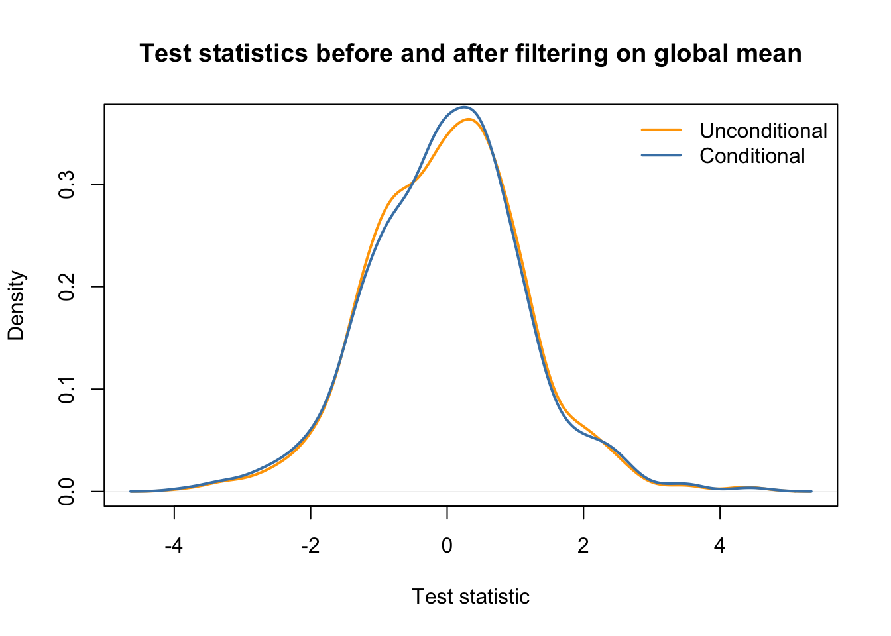

Sequencing: Selected technical topics
Koen Van den Berge
Last compiled on 29 November, 2021
1 Independent filtering
Independent filtering, where genes/transcripts/proteins are filtered out prior to statistical analysis, is a common practice in ‘omics experiments. Typically, lowly expressed features are filtered out, and one can argue that these features’ expression is too low to be deemed biologically relevant. In addition, low-count features are also associated with a low statistical power for differential expression (remember relative uncertainty of counts, and edgeR’s BCV plot), and will increase the number of tests performed, and therefore lead to a more severe multiple testing correction.

Figure 1 from Bourgon et al. (2010).
Independent filtering has been formalized by Bourgon et al. (2010), and the concept can be summarized as follows.
- For each feature we calculate two statistics, \(S_F\) and \(S_T\), respectively used for two stages: filtering and testing (e.g., differential expression).
- In order for a feature to be deemed significant, both of its statistics must be greater than some cut-off.
- We want to control the type I error rate of the second stage (testing). But note that the second stage is conditional on the first stage, as we only test features passing the filter, and basically ignore the fact that filtering was performed. Indeed, one criticism is that computing and correcting the \(p\)-values as if filtering had not been performed may lead to overoptimistic adjusted \(p\)-values.
- Bourgon et al. (2010) show that filtering is only appropriate (i.e., does not inflate type I error rate) if the conditional null distribution of test statistics for features passing the filter is the same as the unconditional null distribution. Therefore, filtering is appropriate if the statistic used for filtering is independent of the statistic used for testing under the null hypothesis. A good filtering statistic, however, is also informative under the alternative hypothesis. Indeed, a filtering statistic that is independent of the test statistic under both the null- and alternative hypothesis will amount to a random filter, hence deteriorate the quality of the analysis.

Figure 2 from Bourgon et al. (2010).
Let’s try a couple of examples to get some intuition using simulated data.
suppressPackageStartupMessages(library(DESeq2))
set.seed(24)
dds <- DESeq2::makeExampleDESeqDataSet()
simCounts <- counts(dds)
group <- dds$condition1.1 A dependent test statistic
## filter based on difference in means
filterStatEffectSize <- abs(rowMeans(simCounts[,group == "A"]) - rowMeans(simCounts[,group == "B"]))
## calculate t-test results for each gene
testStat <- genefilter::rowttests(simCounts, group)
## unconditional distribution of test statistics prior to filtering
plot(density(testStat$statistic, na.rm=TRUE),
xlab = "Test statistic",
main = "Unconditional distribution")
## [1] 0.792
keepEffectSize <- filterStatEffectSize > 1
## conditional distribution: very different!
plot(density(testStat$statistic[keepEffectSize], na.rm=TRUE),
xlab = "Test statistic",
main = "Conditional distribution")
## in same plot
plot(density(testStat$statistic, na.rm=TRUE),
xlab = "Test statistic",
col = "orange",
main = "Test statistics before and after filtering on mean difference",
lwd = 2)
lines(density(testStat$statistic[keepEffectSize], na.rm=TRUE),
xlab = "Test statistic",
main = "Conditional distribution",
col = "steelblue",
lwd = 2)
legend("topright", c("Unconditional", "Conditional"),
col=c("orange", "steelblue"), lwd=2, bty='n')1.2 An independent test statistic
filterStatGlobalMean <- rowMeans(simCounts)
# we remove a similar fraction of ~20% genes
mean(filterStatGlobalMean > 5) ## [1] 0.771keepGlobalMean <- filterStatGlobalMean > 5
## unconditional distribution
plot(density(testStat$statistic, na.rm=TRUE),
xlab = "Test statistic",
main = "Unconditional distribution")
## conditional distribution: the same.
plot(density(testStat$statistic[keepGlobalMean], na.rm=TRUE),
xlab = "Test statistic",
main = "Conditional distribution")
## in same plot
plot(density(testStat$statistic, na.rm=TRUE),
xlab = "Test statistic",
col = "orange",
main = "Test statistics before and after filtering on global mean",
lwd = 2)
lines(density(testStat$statistic[keepGlobalMean], na.rm=TRUE),
xlab = "Test statistic",
main = "Conditional distribution",
col = "steelblue",
lwd = 2)
legend("topright", c("Unconditional", "Conditional"),
col=c("orange", "steelblue"), lwd=2, bty='n')
2 Aliasing
Suppose we are working with the following experimental design on colon cancer. Studying the effect of a drug on gene expression, researchers gather RNA-seq data from four colon cancer patients and four healthy individuals. For each individual, they obtain RNA-seq data from a blood sample before as well as two weeks after taking a daily dose of the drug. The research question relates to differential expression after vs. before taking the drug, in particular whether this is different for the diseased versus healthy group (i.e., the interaction between time (before/after taking the drug) and disease status (healthy/colon cancer)).
In terms of the model matrix, we could imagine a design such as ~ patient + disease*time, where
diseaseis a binary indicator referring to colon cancer versus control sample.timedefines if the sample is taken before or after taking the drug.patientdefines the individual donor the sample comes from.
The research question could then amount to testing the disease * time interaction.
Let’s try this, by simulating random data for one gene.
set.seed(2)
# 2 samples per patient for 8 patients
patient <- factor(rep(letters[1:8], each=2))
# first four are healthy, next four are diseased
disease <- factor(c(rep("healthy",8), rep("cancer",8)), levels=c("healthy", "cancer"))
# one before and one after sample for each
time <- factor(rep(c("before", "after"), 8), levels=c("before", "after"))
table(patient, disease, time)## , , time = before
##
## disease
## patient healthy cancer
## a 1 0
## b 1 0
## c 1 0
## d 1 0
## e 0 1
## f 0 1
## g 0 1
## h 0 1
##
## , , time = after
##
## disease
## patient healthy cancer
## a 1 0
## b 1 0
## c 1 0
## d 1 0
## e 0 1
## f 0 1
## g 0 1
## h 0 1## simulate data for one gene
n <- 16
y <- rpois(n = n, lambda = 50)
## fit a Poisson model
m <- glm(y ~ patient + disease*time,
family = "poisson")
summary(m)##
## Call:
## glm(formula = y ~ patient + disease * time, family = "poisson")
##
## Deviance Residuals:
## Min 1Q Median 3Q Max
## -1.52772 -0.43544 0.00013 0.44162 1.34650
##
## Coefficients: (1 not defined because of singularities)
## Estimate Std. Error z value Pr(>|z|)
## (Intercept) 3.76900 0.11916 31.631 <2e-16 ***
## patientb 0.06744 0.14999 0.450 0.6530
## patientc 0.06744 0.14999 0.450 0.6530
## patientd 0.27304 0.14310 1.908 0.0564 .
## patiente 0.16449 0.16224 1.014 0.3107
## patientf 0.02565 0.16644 0.154 0.8775
## patientg -0.01784 0.16785 -0.106 0.9154
## patienth 0.05706 0.16544 0.345 0.7302
## diseasecancer NA NA NA NA
## timeafter -0.01567 0.10220 -0.153 0.8782
## diseasecancer:timeafter 0.12374 0.14407 0.859 0.3904
## ---
## Signif. codes: 0 '***' 0.001 '**' 0.01 '*' 0.05 '.' 0.1 ' ' 1
##
## (Dispersion parameter for poisson family taken to be 1)
##
## Null deviance: 16.1200 on 15 degrees of freedom
## Residual deviance: 8.8417 on 6 degrees of freedom
## AIC: 120.16
##
## Number of Fisher Scoring iterations: 4We find that one of the coefficients is NA! This is obviously not because we’re dealing with NA values in the data as we’ve just simulated the response variable ourselves. What’s going on?
One of the parameters, in this case the parameter distinguishing cancer from healthy patients cannot be estimated as it is a linear combination of other parameters. In our case, estimating the diseased effect would use information that is already used to estimate the patient-level intercepts. In other words, once you know the patient, you immediately also know the disease status, so estimating the diseased vs healthy effect on top of the patient effect provides no additional information if we have already estimated the patient-level effects. This concept is called aliasing, and is a common technical issue in ’omics experiments with complex experimental designs.
While to understand the origin of the aliasing it is crucial to understand the relationship between the variables in the experimental design, we can also investigate it in detail using the alias function, to give us an idea.
## Model :
## y ~ patient + disease * time
##
## Complete :
## (Intercept) patientb patientc patientd patiente patientf patientg
## diseasecancer 0 0 0 0 1 1 1
## patienth timeafter diseasecancer:timeafter
## diseasecancer 1 0 0We see that the effect diseasecancer is a linear combination of the patient-specific effects of the cancer patients. This makes sense!
For clarity, let’s reproduce this using our design matrix.
X <- model.matrix(~ patient + disease*time) # this is the design used in glm()
## these are indeed identical.
X[,"diseasecancer"]## 1 2 3 4 5 6 7 8 9 10 11 12 13 14 15 16
## 0 0 0 0 0 0 0 0 1 1 1 1 1 1 1 1## 1 2 3 4 5 6 7 8 9 10 11 12 13 14 15 16
## 0 0 0 0 0 0 0 0 1 1 1 1 1 1 1 1Since one of our parameters is a linear combination of other parameters, it cannot be estimated simultaneously with the other parameters. In this case, we can actually drop the disease main effect from the model, since we know that it is already included in the patient effect.
We will have to carefully construct our design matrix in order to account for all important sources of variation while still allowing us to answer the research question of interest. The aliasing exploration above has made it clear we may drop the disease main effect, so let’s start by constructing this design matrix.
X <- model.matrix(~ patient + time + disease:time)
m2 <- glm(y ~ -1 + X,
family = "poisson")
summary(m2)##
## Call:
## glm(formula = y ~ -1 + X, family = "poisson")
##
## Deviance Residuals:
## Min 1Q Median 3Q Max
## -1.52772 -0.43544 0.00013 0.44162 1.34650
##
## Coefficients: (1 not defined because of singularities)
## Estimate Std. Error z value Pr(>|z|)
## X(Intercept) 3.76900 0.11916 31.631 <2e-16 ***
## Xpatientb 0.06744 0.14999 0.450 0.6530
## Xpatientc 0.06744 0.14999 0.450 0.6530
## Xpatientd 0.27304 0.14310 1.908 0.0564 .
## Xpatiente 0.28823 0.16077 1.793 0.0730 .
## Xpatientf 0.14939 0.16500 0.905 0.3653
## Xpatientg 0.10590 0.16643 0.636 0.5246
## Xpatienth 0.18081 0.16400 1.102 0.2703
## Xtimeafter -0.01567 0.10220 -0.153 0.8782
## Xtimebefore:diseasecancer -0.12374 0.14407 -0.859 0.3904
## Xtimeafter:diseasecancer NA NA NA NA
## ---
## Signif. codes: 0 '***' 0.001 '**' 0.01 '*' 0.05 '.' 0.1 ' ' 1
##
## (Dispersion parameter for poisson family taken to be 1)
##
## Null deviance: 4489.2752 on 16 degrees of freedom
## Residual deviance: 8.8417 on 6 degrees of freedom
## AIC: 120.16
##
## Number of Fisher Scoring iterations: 4## Model :
## y ~ -1 + X
##
## Complete :
## X(Intercept) Xpatientb Xpatientc Xpatientd Xpatiente
## Xtimeafter:diseasecancer 0 0 0 0 1
## Xpatientf Xpatientg Xpatienth Xtimeafter
## Xtimeafter:diseasecancer 1 1 1 0
## Xtimebefore:diseasecancer
## Xtimeafter:diseasecancer -1We are still confronted with aliasing as the model matrix contains an interaction effect timebefore:diseasecancer as well as timeafter:diseasecancer, while only the latter is relevant. Indeed, we know that we can derive the timebefore:diseasecancer effect by averaging the patient effects of the cancer patients.
X <- X[,!colnames(X) %in% "timebefore:diseasecancer"]
## fit a Poisson model
m2 <- glm(y ~ -1 + X,
family = "poisson")
summary(m2)##
## Call:
## glm(formula = y ~ -1 + X, family = "poisson")
##
## Deviance Residuals:
## Min 1Q Median 3Q Max
## -1.52772 -0.43544 0.00013 0.44162 1.34650
##
## Coefficients:
## Estimate Std. Error z value Pr(>|z|)
## X(Intercept) 3.76900 0.11916 31.631 <2e-16 ***
## Xpatientb 0.06744 0.14999 0.450 0.6530
## Xpatientc 0.06744 0.14999 0.450 0.6530
## Xpatientd 0.27304 0.14310 1.908 0.0564 .
## Xpatiente 0.16449 0.16224 1.014 0.3107
## Xpatientf 0.02565 0.16644 0.154 0.8775
## Xpatientg -0.01784 0.16785 -0.106 0.9154
## Xpatienth 0.05706 0.16544 0.345 0.7302
## Xtimeafter -0.01567 0.10220 -0.153 0.8782
## Xtimeafter:diseasecancer 0.12374 0.14407 0.859 0.3904
## ---
## Signif. codes: 0 '***' 0.001 '**' 0.01 '*' 0.05 '.' 0.1 ' ' 1
##
## (Dispersion parameter for poisson family taken to be 1)
##
## Null deviance: 4489.2752 on 16 degrees of freedom
## Residual deviance: 8.8417 on 6 degrees of freedom
## AIC: 120.16
##
## Number of Fisher Scoring iterations: 4We see that all coefficients can now be estimated. The timeafter effect may be interpreted as the time effect for healthy patients, while the timeafter:diseasecancer effect may be interpreted as the difference in the time effect for cancer patients as compared to healthy patients, i.e., it is the relevant interaction effect we are interested in.
Question. Taking this further, suppose that we can safely assume that there is no interaction effect between disease status and time. How would you now test for differential expression between healthy and cancer patients at the first timepoint? Specify the experimental design and contrast used.
Answer.
Assuming no interaction, we can specify the design as follows:
## (Intercept) patientb patientc patientd patiente patientf patientg patienth
## 1 1 0 0 0 0 0 0 0
## 2 1 0 0 0 0 0 0 0
## 3 1 1 0 0 0 0 0 0
## 4 1 1 0 0 0 0 0 0
## 5 1 0 1 0 0 0 0 0
## 6 1 0 1 0 0 0 0 0
## timeafter
## 1 0
## 2 1
## 3 0
## 4 1
## 5 0
## 6 13 limma-voom as an alternative approach to modeling counts
limma is a powerful linear model based framework for modeling microarray gene expression data and inferring differential expression results, and has been introduced in the proteomics module of this course. With the inception of RNA-seq, the limma developers got creative and extended their framework to also model count data, hence creating limma-voom.
3.1 The limma framework for the analysis of microarrays
In the proteomics module, we have previously introduced the powerful linear model based framework limma, and how it uses an empirical Bayes strategy to borrow information across proteins to derive a posterior variance estimate. In its default implementation, limma cannot be used to model count data, as it can not account for their mean-variance relationship. The developers, however, came up with a creative approach to use the limma framework to model count data.
3.2 limma-voom: extending limma for RNA-seq data
- Count models such as
edgeRandDESeq2automatically account for the mean-variance relationship of the data by assuming a proper count distribution, given that the observed mean-variance relationship is close to the one assumed by the distribution. However, they are also more complex, both computationally as well as statistically and conceptually. - limma-voom (Law et al. (2014)) is a method that unlocks Gaussian linear models to analyze count data in the context of RNA-seq, by first estimating the mean-variance relationship of the dataset at hand, and subsequently incorporating it in the analysis through observation-level weights in a linear regression model.

Figure 1 from Law et al. (2014).
- The mean-variance relationship is dataset-specific and needs to be estimated separately for each dataset.
- The mean-variance trend is estimated nonparametrically across all genes, using a global mean and variance for each gene. Using this trend, observation-level variances are estimated for each individual observation.
- These observation-level variances are then used as inverse weights in the linear modeling framework, to account for heteroscedasticity.

Figure 1 from Law et al. (2014).
3.3 limma-voom analysis of parathyroid data
limma has an extensive user’s guide which can be accessed via limma::limmaUsersGuide().
##
## Attaching package: 'limma'## The following object is masked from 'package:DESeq2':
##
## plotMA## The following object is masked from 'package:BiocGenerics':
##
## plotMA## class: SummarizedExperiment
## dim: 63193 23
## metadata(1): MIAME
## assays(1): counts
## rownames(63193): ENSG00000000003 ENSG00000000005 ... LRG_98 LRG_99
## rowData names(0):
## colnames: NULL
## colData names(8): run experiment ... study sampledesign <- model.matrix(~treatment*time+patient,
data=colData(se))
keep <- filterByExpr(se, design)
table(keep)## keep
## FALSE TRUE
## 46629 16564filtCounts <- assays(se)$counts[keep,]
dge <- DGEList(counts=filtCounts)
# normalize just as in edgeR
dge <- calcNormFactors(dge)
# fit the mean-variance trend used to calculate weights
v <- voom(dge, design, plot=TRUE)# this mean-variance trend is then automatically incorporated into the usual limma pipeline
fit <- lmFit(v, design)
fit <- eBayes(fit)
tt <- topTable(fit, coef=(ncol(design-1):ncol(design)), number=nrow(dge)) # test interaction effects
head(tt) #similar as in edgeR, we find no DE3.3.1 Testing contrasts using limma-voom
When working with limma-voom, we cannot immediately test a contrast using a contrast matrix just like we did in edgeR. Instead, we will reparametrize our model according to the contrasts, such that each parameter corresponds to a specific contrast, using the contrasts.fit function.
# contrast matrix we used before
L <- matrix(0, nrow = ncol(fit$coefficients), ncol = 7)
rownames(L) <- colnames(fit$coefficients)
colnames(L) <- c("DPNvsCON24", "DPNvsCON48",
"OHTvsCON24", "OHTvsCON48",
"DPNvsCONInt", "OHTvsCONInt",
"OHTvsDPNInt")
# DPN vs control at 24h
L[2,"DPNvsCON24"] <- 1
# DPN vs control at 48h
L[c(2,8),"DPNvsCON48"] <- 1
# OHT vs control at 24h
L[3,"OHTvsCON24"] <- 1
# OHT vs control at 48h
L[c(3,9),"OHTvsCON48"] <- 1
# DPN control interaction
L[8,"DPNvsCONInt"] <- 1
# OHT control interaction
L[9,"OHTvsCONInt"] <- 1
# OHT DPN interaction
L[c(9,8),"OHTvsDPNInt"] <- c(1, -1)
L## DPNvsCON24 DPNvsCON48 OHTvsCON24 OHTvsCON48 DPNvsCONInt
## (Intercept) 0 0 0 0 0
## treatmentDPN 1 1 0 0 0
## treatmentOHT 0 0 1 1 0
## time48h 0 0 0 0 0
## patient2 0 0 0 0 0
## patient3 0 0 0 0 0
## patient4 0 0 0 0 0
## treatmentDPN:time48h 0 1 0 0 1
## treatmentOHT:time48h 0 0 0 1 0
## OHTvsCONInt OHTvsDPNInt
## (Intercept) 0 0
## treatmentDPN 0 0
## treatmentOHT 0 0
## time48h 0 0
## patient2 0 0
## patient3 0 0
## patient4 0 0
## treatmentDPN:time48h 0 -1
## treatmentOHT:time48h 1 1fit <- lmFit(v, design)
fit2 <- contrasts.fit(fit, L)
fit2 <- eBayes(fit2)
head(fit2$coefficients) # one coefficient is one contrast## DPNvsCON24 DPNvsCON48 OHTvsCON24 OHTvsCON48 DPNvsCONInt
## ENSG00000000003 0.160189232 -0.015153215 0.11818144 -0.053716201 -0.17534245
## ENSG00000000419 -0.081114061 -0.006840437 -0.05767507 0.116075037 0.07427362
## ENSG00000000457 -0.196673615 -0.092219304 -0.19581292 -0.007131573 0.10445431
## ENSG00000000460 0.101878901 0.346346109 0.16977808 0.407107755 0.24446721
## ENSG00000000938 0.001144654 -0.027973867 -0.23689618 -0.270319390 -0.02911852
## ENSG00000000971 0.558406693 -0.362972697 0.45660599 -0.594255351 -0.92137939
## OHTvsCONInt OHTvsDPNInt
## ENSG00000000003 -0.17189764 0.003444803
## ENSG00000000419 0.17375011 0.099476483
## ENSG00000000457 0.18868134 0.084227034
## ENSG00000000460 0.23732967 -0.007137533
## ENSG00000000938 -0.03342321 -0.004304688
## ENSG00000000971 -1.05086134 -0.129481951# loop over all contrasts of interest
ttList <- list()
for(cc in 1:ncol(L)){
ttList[[cc]] <- topTable(fit2, coef=cc, number=nrow(dge))
}
names(ttList) <- colnames(L)
nDE <- unlist(lapply(ttList, function(x) sum(x$adj.P.Val <= 0.05)))
nDE## DPNvsCON24 DPNvsCON48 OHTvsCON24 OHTvsCON48 DPNvsCONInt OHTvsCONInt
## 0 0 0 7 0 0
## OHTvsDPNInt
## 0